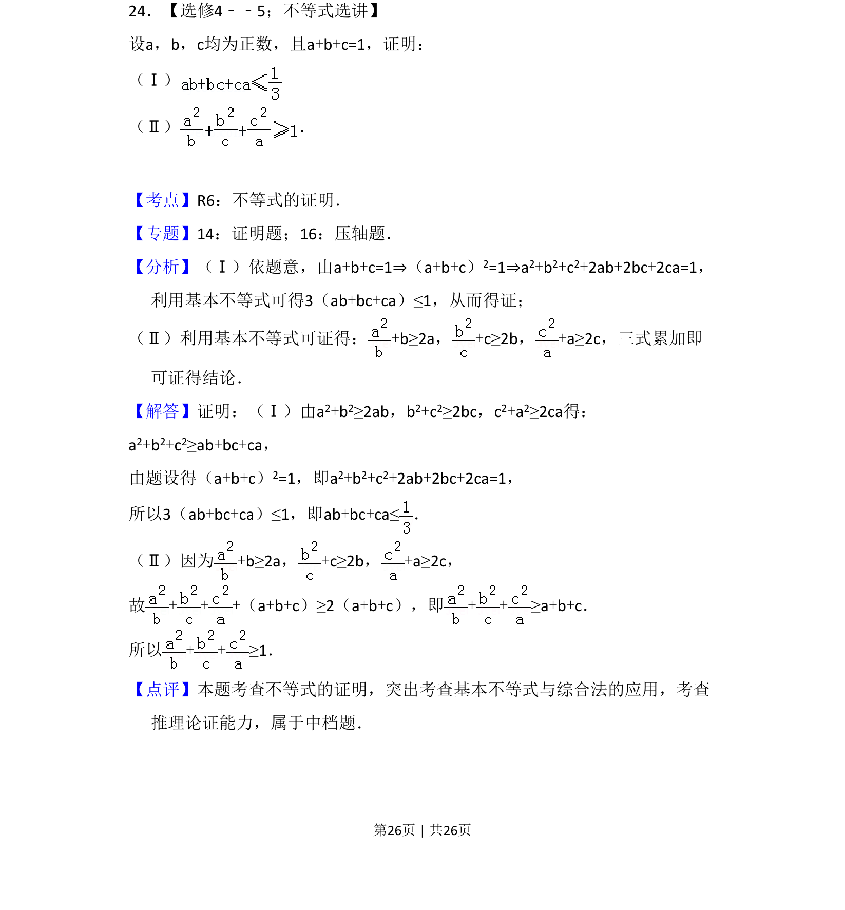
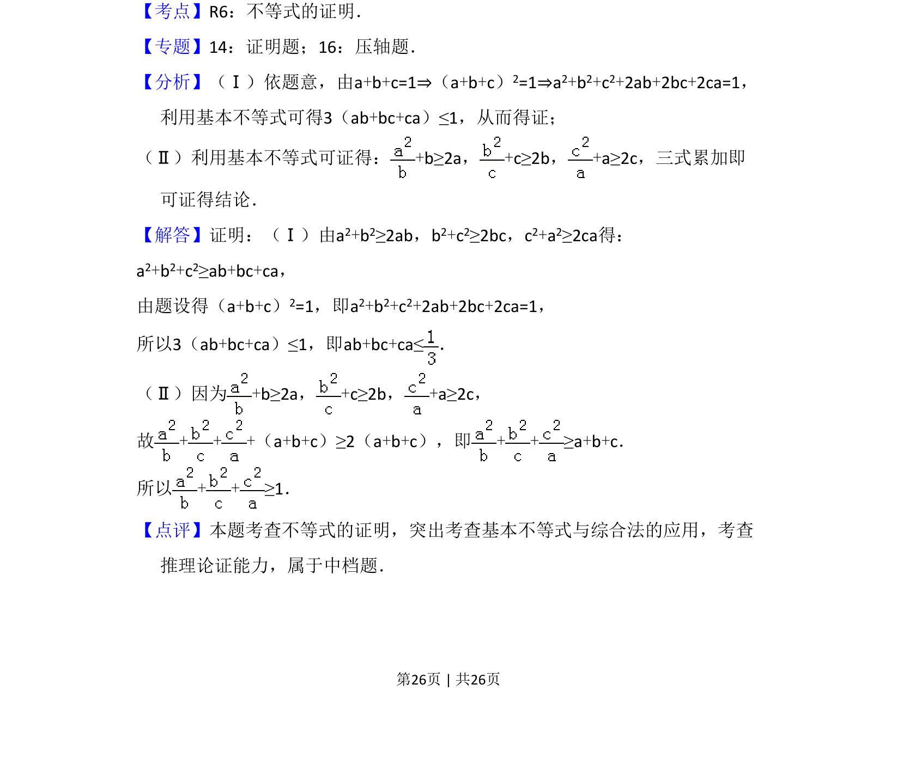

考点：不等式证明 基本不等式 综合法

证明不等式，利用基本不等式和已知条件 a+b+c=1 推导结论。

📄 原 PDF 第 26 页：
素材/真题/吉林/2008-2024·（吉林）数学高考真题/2013年高考数学试卷（理）（新课标Ⅱ）（解析卷）.pdf
24．【选修4﹣﹣5；不等式选讲】 设a，b，c均为正数，且a+b+c=1，证明： （Ⅰ） （Ⅱ） ．
【考点】R6：不等式的证明．菁优网版权所有 【专题】14：证明题；16：压轴题． 【分析】（Ⅰ）依题意，由a+b+c=1⇒（a+b+c）2=1⇒a2+b2+c2+2ab+2bc+2ca=1， 利用基本不等式可得3（ab+bc+ca）≤1，从而得证； （Ⅱ）利用基本不等式可证得：+b≥2a，+c≥2b，+a≥2c，三式累加即 可证得结论． 【解答】证明：（Ⅰ）由a2+b2≥2ab，b2+c2≥2bc，c2+a2≥2ca得： a2+b2+c2≥ab+bc+ca， 由题设得（a+b+c）2=1，即a2+b2+c2+2ab+2bc+2ca=1， 所以3（ab+bc+ca）≤1，即ab+bc+ca≤． （Ⅱ）因为+b≥2a，+c≥2b，+a≥2c， 故+ + +（a+b+c）≥2（a+b+c），即+ +≥a+b+c． 所以+ +≥1． 【点评】本题考查不等式的证明，突出考查基本不等式与综合法的应用，考查 推理论证能力，属于中档题．